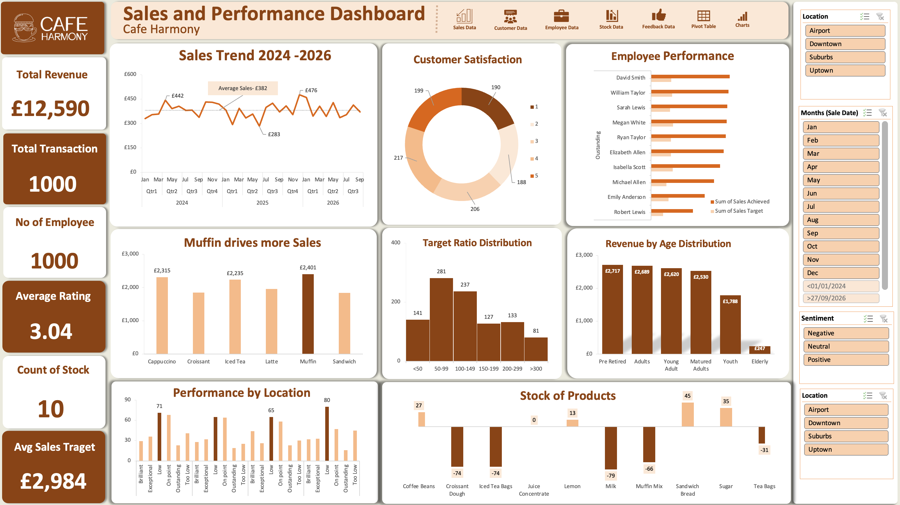

NexaCart Global E-commerce Analytics
A Tableau performance analysis of 25,000 orders across 20 countries, evaluating revenue, products, customer behaviour, acquisition channels, returns, and geographic demand.
Selected case studies showing how I structure data, define KPIs, build dashboards, and translate findings into business recommendations.
A Tableau performance analysis of 25,000 orders across 20 countries, evaluating revenue, products, customer behaviour, acquisition channels, returns, and geographic demand.

A Power BI analysis of pharmaceutical distribution performance, covering revenue, profit, product efficiency, customer segments, reseller dependency, and geographic opportunity.

An Excel-based operational analysis for a growing virtual café chain, focused on sales patterns, customer profiles, menu performance, inventory, and service efficiency.